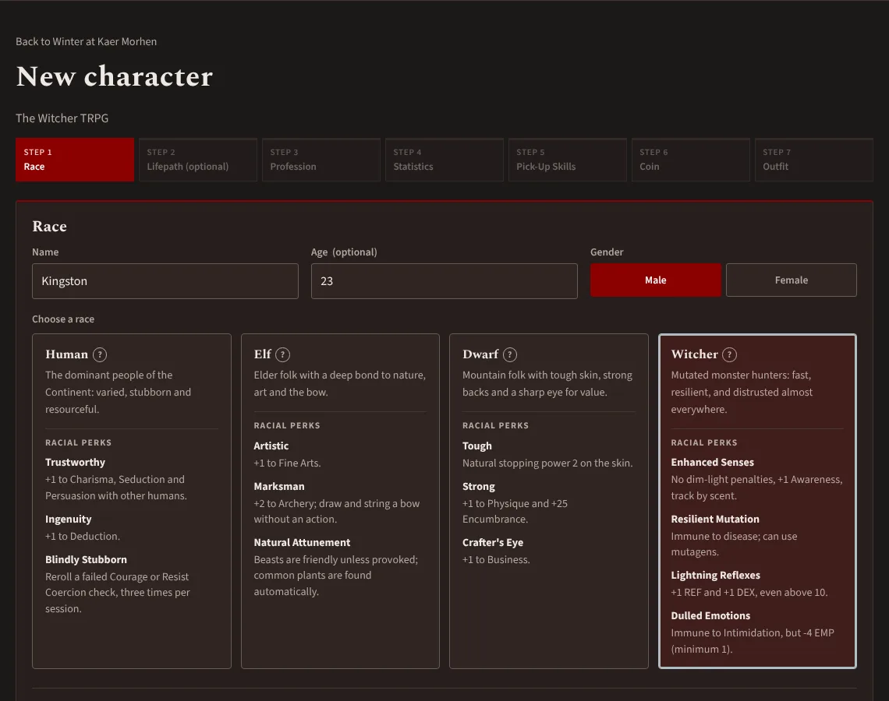
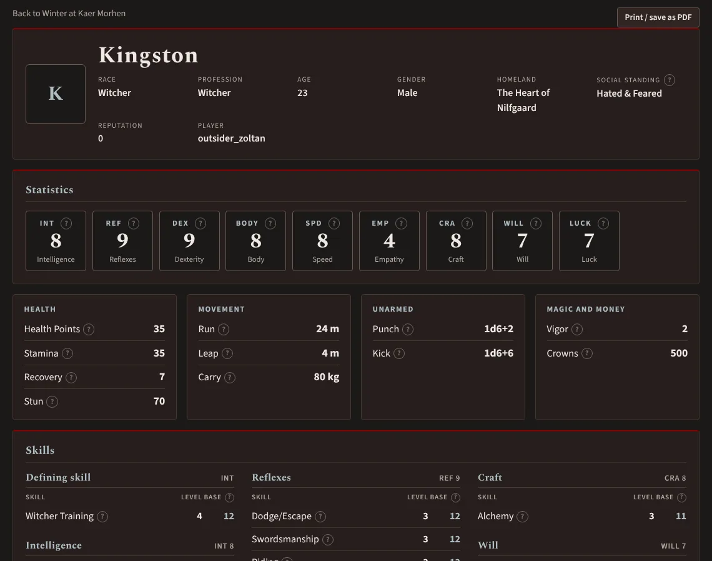
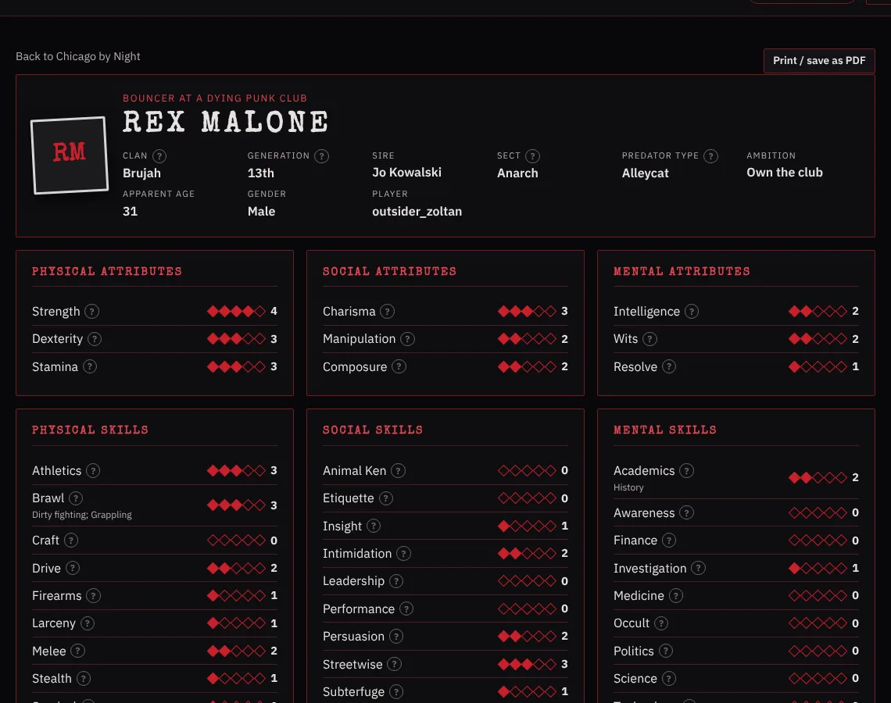
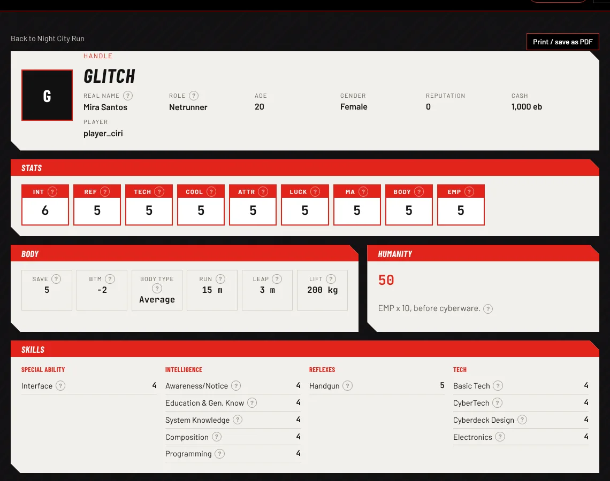
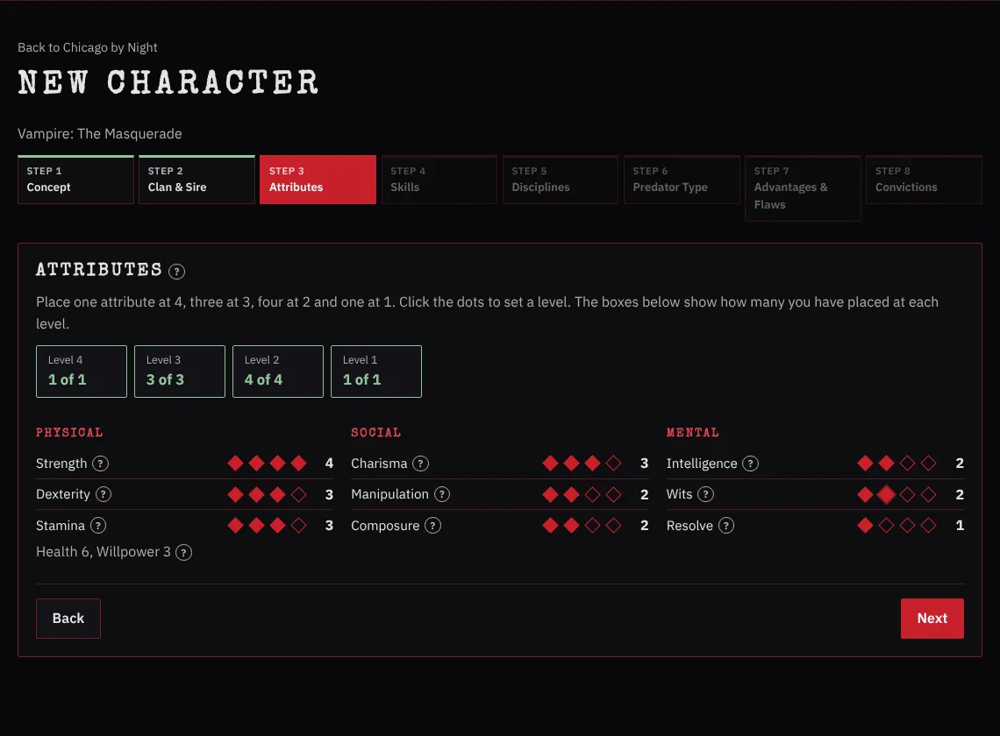
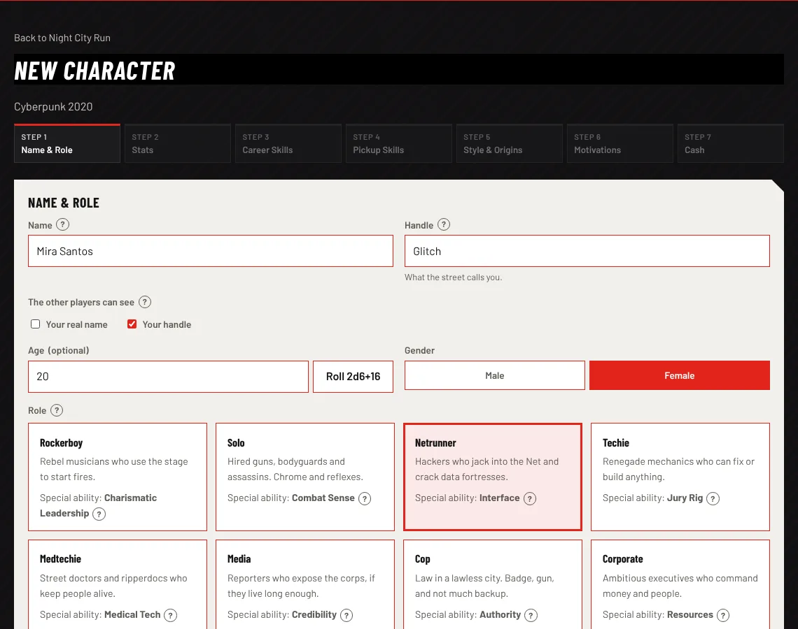

The Witcher TRPG
Seven steps: race, lifepath, profession, statistics, pick-up skills, coin and outfit. Pick the colours of your witcher school: Wolf, Cat, Griffin, Bear or Viper.
Step-by-step character creation for The Witcher TRPG, Vampire: The Masquerade 5th edition and Cyberpunk 2020. Your GM makes a game, you join with a code, and everyone sees exactly what they should, and nothing more.
The demo runs entirely in your browser. Log in with one of the demo accounts listed on the login page.




Seven steps: race, lifepath, profession, statistics, pick-up skills, coin and outfit. Pick the colours of your witcher school: Wolf, Cat, Griffin, Bear or Viper.

Eight steps from concept to convictions: clan and sire, the attribute and skill spreads, Disciplines, predator type, and Advantages and Flaws.

Seven steps: role, stats (point-buy or rolled), career and pickup skills, style, motivations and starting cash. Hide your real name from the crew and go by your handle.
Every term has a small "?" next to it. Point at it for an explanation, or click it to keep it open.
This is the heart of the project. The rules live inside the database, not in the web page, so they hold even if someone talks to the database directly.
| Looking at… | Basics | Full sheet | Backstory |
|---|---|---|---|
| Your own character | Yes | Yes | Yes |
| Another player's character | Yes | No | If they share it |
| Any character, as the GM | Yes | Yes | Yes |
| A game you're not in | No | No | No |
Signing up creates a real MariaDB account that logs in with ED25519. The site's tables never store a password.
Accounts get one role, and a DENY rule blocks every character table. Users can only read through views and write through procedures.
Each view asks MariaDB which account is logged in and returns only the rows that account may see.
Joining a game, saving a character or sharing a backstory goes through a procedure that refuses anything against the rules.
DENY, definer views and stored procedures